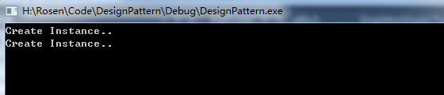

有时候我们会要求一个类只能存在一个对象，比如：
- 一个系统中可以存在多个打印任务，但是只能有一个正在工作的任务；
- 一个系统只能有一个窗口管理器或文件系统；
- 一个系统只能有一个计时工具或ID(序号)生成器。
摘自百度百科“单例模式”
初步实现
一个类只能创建一个实例，潜在意思就是说该类的构造函数不能随便调用，要实现这一点的一个直观想法就是将构造函数设为private。这时，只有类的内部函数和友元（破坏面向对象的封装性，不予考虑）可以调用它。但是没有创建实例，那就无法调用普通的成员函数，这就会陷入自相矛盾。所以我们需要一个静态的成员函数用于调用构造方法。
初步实现代码：
1 | namespace Single{ |
问题
使用上述代码在单线程是可行的，但是如果在多线程下使用上面的实现方法，可能会创建多个实例。例如使用下面的代码创建实例：
1 | using namespace Single; |
输出结果有时会是：

如图所示Create Instance输出了两次，表明构造函数被执行了两次。原因是可能会存在这样的执行顺序：
if(线程A, singleton = nullptr) —> if(线程B, singleton = nullptr) —> new Singleton()(线程A) —> new Singleton()(线程B)
适用于多线程
既然if语句的执行顺序对结果会有影响，一个很自然的想法就是在if语句之前加一个锁。这样第一个线程进入了if语句前给它加锁后，其他进程就必须等到锁释放了才能进入。
修改后代码如下：
1 | namespace Single{ |
这样的代码效率不高，原因是每次进入if之前都需要加锁，这样别的程序只能等待了，一种改进的方法是进行两次if判断，只有在singleton == nullptr时才加锁：
1 | static Singleton* getInstance() { |
这样的实现已经基本满足需求，还有没有其他的实现方式？
其他实现方式
静态变量初始化只会调用一次，因此我们可以在静态变量初始时就直接创建。不需要在getInstance函数里创建。
1 | class Singleton2 { |